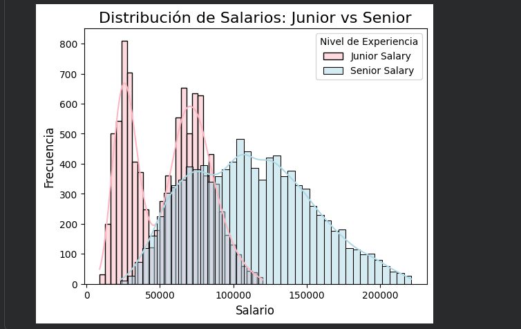

Sistema de gestión Climática
Proyecto desarrollado en lenguaje C para gestionar registros climáticos mediante estructuras de datos y tipos abstractos de datos (TAD).
Ver en GitHubEn esta sección presento algunos de los proyectos que he desarrollado durante mi formación académica. Cada uno de ellos me permitió aplicar distintos conceptos de programación y fortalecer mis habilidades.

Consulta de precipitaciones con memoria dinámica y TADs.

Histogramas y curvas de densidad con Pandas y Seaborn.
Proyecto desarrollado en lenguaje C para gestionar registros climáticos mediante estructuras de datos y tipos abstractos de datos (TAD).
Ver en GitHubProyecto de análisis de datos realizado en Python con Pandas, Matplotlib y Seaborn para estudiar la distribución de los salarios de programadores.
Ver en GitHub